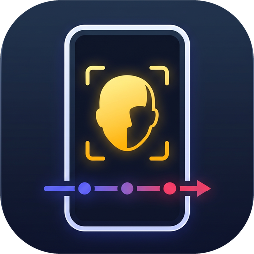

Mô hình Vỏ Tĩnh + Lõi Động (Static Shell & Hot-Swap Core) — Bạn kiểm soát kho lõi, người dùng cuối chỉ cầm tool EXE.
flowchart LR
subgraph OWNER["1. Máy Dev của Bạn (Nắm Công Nghệ Lõi)"]
DEV["Chỉnh sửa Lõi: app.py, face_engine.py, celeb_service.py, static/"]
PUB["publish_update.bat / git push"]
DEV --> PUB
end
subgraph CLOUD["2. Kho Phân Phối (GitHub: Bach1711/MASYS-CelebTimeline)"]
API["GitHub REST API & raw version.json"]
ZIP["Gói Source ZIP (nhánh main, ~vài trăm KB)"]
end
subgraph CLIENT["3. Máy Người Dùng (Chỉ Cầm Tool EXE)"]
EXE["Vỏ Tĩnh: MASYS-CelebTimeline.exe + _internal/ + bin/ffmpeg + models/"]
HOT["Lõi Động trên ổ đĩa: *.py, static/, version.json"]
USERDATA["Dữ liệu giữ nguyên: workspace/, output/, cookies.txt"]
UI["Trình duyệt Web UI (127.0.0.1:8765)"]
EXE -->|"launcher.py nạp động lúc mở"| HOT
UI <-->|"Kiểm tra & Kích hoạt Update"| HOT
end
PUB -->|"git push origin main"| CLOUD
HOT -->|"GET /api/update/check"| API
ZIP -->|"POST /api/update/apply (chép đè Lõi, giữ Vỏ & Data)"| HOT
sequenceDiagram
participant U as Trình duyệt (User)
participant S as App Server (app.py)
participant G as GitHub (origin/main)
participant OS as Windows CMD
U->>S: GET /api/update/check
S->>S: Đọc version.json trên máy (local_sha)
S->>G: Hỏi commit mới nhất + raw version.json (remote_sha)
G-->>S: Trả SHA mới + danh sách commits thay đổi
S-->>U: Nếu remote_sha != local_sha -> Bật chấm đỏ thông báo
U->>S: POST /api/update/apply (User bấm "Cập nhật ngay")
alt Máy Dev có .git
S->>G: git fetch origin main & git reset --hard origin/main
else Máy User chỉ có bản EXE (không cần cài Git)
S->>G: Tải archive ZIP từ codeload.github.com
S->>S: Giải nén đè *.py, static/ (Bỏ qua preserve_names)
end
S->>S: Ghi remote_sha mới vào version.json
S->>OS: Spawn lệnh chờ 2s -> mở lại MASYS-CelebTimeline.exe
S-->>U: Trả ok=true -> UI đếm ngược rồi tự F5
S->>S: os._exit(0) (Tắt tiến trình cũ nhả cổng 8765)
OS->>EXE: Khởi động lại EXE -> Nạp code *.py mới
build_exe.bat + launcher.py)_internal/ và bin/. Cờ --exclude-module loại các file *.py của app ra khỏi file đóng gói.MASYS-CelebTimeline.exe, launcher.py gọi importlib.import_module("app") để nạp trực tiếp code nằm cạnh file EXE./api/update/check)_get_local_version_info() đọc version.json (hoặc git rev-parse HEAD trên máy dev) để lấy local_sha._fetch_remote_github_info() gọi GitHub REST API lấy remote_sha, so sánh commit qua /compare/{local}...{remote} để dựng changelog./api/update/apply)main từ codeload.github.com (~vài trăm KB).preserve_names: workspace, output, bin, _internal, MASYS-CelebTimeline.exe, feedback.json, cookies.txt._schedule_server_restart)version.json bằng remote_sha mới nhất.timeout /t 2 & start "" "...MASYS-CelebTimeline.exe" --no-browser rồi gọi os._exit(0) để nhả cổng 8765 và nạp code mới tức thì.Hiện tại ở bản MVP ver 0.1, kho GitHub đang để Public để tải ZIP nhanh không cần xác thực, và file .py nằm dạng văn bản đọc được cạnh file EXE. Khi muốn thương mại hóa hoặc bảo mật thuật toán, bạn có thể nâng cấp theo 3 cấp:
| Cấp độ | Cách triển khai trên kiến trúc hiện có | Người dùng cuối nhìn thấy gì? |
|---|---|---|
| Cấp 1 Khóa nguồn tải |
Chuyển repo GitHub sang Private. Dựng 1 API Server trung gian (Cloudflare Worker / VPS) kiểm tra License Key + HWID rồi mới cấp link tải gói update. | Chỉ máy có bản quyền mới kiểm tra & tải được bản mới. Không ai tự clone được repo của bạn. |
| Cấp 2 Mã hóa lõi (.pyd) |
Dùng Cython hoặc Nuitka biên dịch app.py, face_engine.py, celeb_service.py thành file nhị phân DLL .pyd trước khi nén ZIP update. launcher.py vẫn import app chạy bình thường. |
Mở thư mục EXE chỉ thấy các file nhị phân .pyd, không đọc được mã nguồn Python. |
| Cấp 3 Tách "Não" lên Cloud |
Tool trên máy khách chỉ lo tác vụ nặng băng thông/CPU (tải YouTube, FFmpeg render). Toàn bộ logic AI tìm timeline, chấm điểm, prompt & API Key chạy trên Server riêng của bạn. | Kể cả dịch ngược được EXE cũng không lấy được công nghệ lõi; dễ dàng bán gói theo tháng / lượt chạy. |